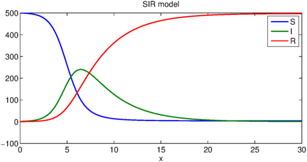
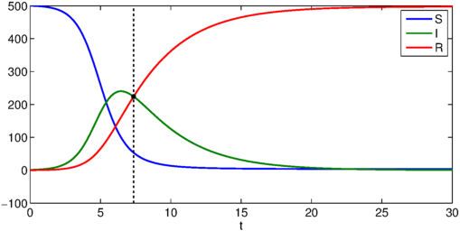
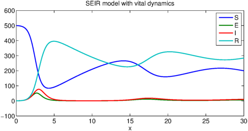

LW = 'linewidth'; FS = 'fontsize'; MS = 'markersize';
Many mathematical models exist for the spread of diseases. This is partly because as epidemiology matured, more sophisticated models were developed. It is also because not all diseases spread in the same fashion. In this Example we explore some of the more well-known models of disease spread. All of the models presented are called "compartmental" models because they group members of a population into compartments -- for example, "infected" and "uninfected" -- which interact according to a system of differential equations.
The systems of ODEs in this Example are initial value problems, and their solution on large domains is made possible by Chebfun's new IVP capabilities.
SIR model
The most famous mathematical model of epidemics is the SIR model. This model groups members of a fixed population as susceptible (S), infected (I), or recovered (R). The dynamics dictate a one-way track: susceptible members may become infected, and infected individuals may recover, but that is all. So beginning with a nonzero number of infected people, then after enough time everyone ends up "recovered" (which is a word also used to mean "dead").
The model is a great simplification of how most diseases actually spread: it ignores incubation period; it assumes full contact among the whole population, ignoring geographic constraints; it assumes everyone is equally susceptible to the disease; and it treats the population as being continuous rather than discrete. Nevertheless, its assumptions about immunity make it a good model for measles, mumps, and rubella, which are all highly contagious diseases that infected people eventually develop an immunity to.
The SIR equations are $$ \frac{d S}{d t} = -c I S, $$ $$ \frac{d I}{d t} = c I S - r I, $$ $$ \frac{d R}{d t} = r I. $$ The positive constants $c$ and $r$ are called the contact rate (or transmission rate) and recovery rate, and are determined empirically for a given disease. Looking at the for a while, you'll see that these equations all make sense intuitively. For example, the rate of increase of the population of "recovered" individuals is proportional to the size of infected individuals.
Here is a chebop for the SIR model.
contact_rate = .003;
recovery_rate = .3;
op = @(x,S,I,R) [ ...
diff(S) + contact_rate*I.*S
diff(I) - contact_rate*I.*S + recovery_rate*I
diff(R) - recovery_rate*I
];
N = chebop(op, [0,30]);
The initial conditions will be that out of population of 501 there is a single infected individual.
N.lbc = @(S,I,R) [ ...
S - 500
I - 1
R
];
We will use chebop's nonlinear backslash syntax to solve the problem. The deal method allows the solution components to be dealt to multiple outputs.
[S,I,R] = deal(N\0);
Here is a plot of the solution.
plot([S I R])
legend('S','I','R')
title('SIR model')
xlabel('x')

So beginning from a small fraction of infected people, eventually the entire population gets the disease and recovers (or dies). Notice that if $I(0)=0$, the solution component for $I$ would be the steady function $I(t)=0$, which is an unstable (and biologically accurate) equilibrium of the system.
The model wouldn't be very realistic if the population size varied over time, so let us verify that it is constant.
plot(S+I+R)
title('total population size')
ylim([0 600])
It can also be seen from the differential equations that the population is constant by adding the equations together.
SIR with vital dynamics
The SIR model described above encounters problems when imposed on a long time horizen. In particular, it assumes that members of the population stick around forever. A modified version of the SIR model accounts for the vital dynamics -- that is, birth and death -- of members of the population.
SIR with vital dynamics still assumes a constant population size, but it includes a birth rate and death rate (of equal magnitude) that assures that members of the population are replaced by susceptible individuals over time. The equations are $$ \frac{d S}{d t} = \mu N - \mu S - \frac{c}{N} I S, $$ $$ \frac{d I}{d t} = \frac{c}{N} I S - (r+\mu) I, $$ $$ \frac{d R}{d t} = r I - \mu R, $$ where $\mu$ is the birth and death rate and $N$ is the total population size. The other constants have changed to account for the fact that the total population size is worked into the equations.
N = 501;
birth_rate = .08;
contact_rate = 7;
recovery_rate = 3;
op = @(x,S,I,R) [ ...
diff(S) - birth_rate*N + birth_rate*S + contact_rate/N*I.*S
diff(I) - contact_rate/N*I.*S + (recovery_rate+birth_rate)*I
diff(R) - recovery_rate*I + birth_rate*R
];
N = chebop(op, [0,50]);
Let's keep the same initial conditions as before.
N.lbc = @(S,I,R) [ ...
S - 500
I - 1
R
];
What does the solution look like now?
[S,I,R] = deal(N\0);
plot([S I R])
legend('S','I','R')
title('SIR model with vital dynamics')
xlabel('x')

And again we can verify that the population is constant.
norm(diff(S+I+R))
ans =
6.846441993590116e-10
The vital dynamics therefore introduct a qualitative change in the solution in that its components are no longer unimodal. Because the population becomes susceptible again over time, there are intermittent outbreaks of the disease. Eventually, however, the situation stabilizes.
SEIR
The SEIR model expands upon the SIR model by adding an intermediate compartment ("exposed") for people who have been infected but are not themselves infectious yet. The "exposed" category is significant for diseases like influenza that have an incubation period.
The equations of the SEIR model are $$ \frac{d S}{d t} = \mu N - \mu S - \frac{c}{N} I S, $$ $$ \frac{d E}{d t} = \frac{c}{N} I S - (a+\mu) E, $$ $$ \frac{d I}{d t} = aE - (r+\mu) I, $$ $$ \frac{d R}{d t} = r I - \mu R, $$ where $a^{-1}$ is the average incubation period of the contagion.
N = 501;
birth_rate = .08;
incubation_period = 5;
contact_rate = 8;
recovery_rate = 3;
op = @(x,S,E,I,R) [ ...
diff(S) - birth_rate*N + birth_rate*S + contact_rate/N*I.*S
diff(E) - contact_rate/N*I.*S + (incubation_period+birth_rate)*E
diff(I) - incubation_period*E + (recovery_rate+birth_rate)*I
diff(R) - recovery_rate*I + birth_rate*R
];
N = chebop(op, [0,30]);
We will modify the initial conditions so that a single person is exposed but not yet infectious.
N.lbc = @(S,E,I,R) [ ...
S - 500
E - 1
I
R
];
Here is the solution to the SEIR model.
[S,E,I,R] = deal(N\0);
plot([S E I R])
legend('S','E','I','R')
title('SEIR model with vital dynamics')
xlabel('x')

And once more, verify the total population is constant:
norm(diff(S+E+I+R))
ans =
1.153811870942051e-09
Other models
There are endless variants of the basic SIR model to include factors like passive immunity, variable transmission rates, stochastic processes, noise, external factors (like the mosquitoe population in the case of malaria), geographic setting, and so on.
References
[1] Daley, D. J. & Gani, J. Epidemic Modeling: An Introduction. NY: Cambridge University Press (2005).